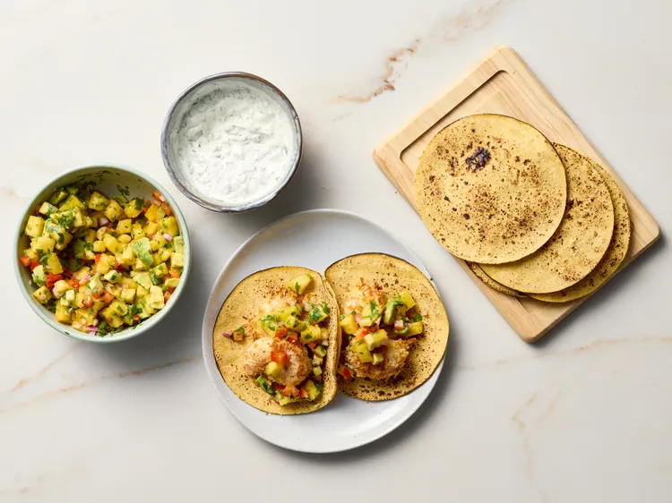

Shrimp Tacos

Description
These crispy coconut shrimp tacos are simply delicious. They are served with homemade pineapple avocado salsa and cilantro-lime crema for extra flavor.
Ingredients
- 1 pound colossal shrimp, peelend and deveined
- 1/2 cup all purpose flour
- 1/2 teaspoon salt
- 1/4 teaspoon freshly ground black pepper
- 1 large egg
- 1/4 cup unsweetened coconut milk
- 3/4 cup panko bread crumbs
- 3/4 cup shredded coconut (sweetened or unsweetened)
- cooking spray
Steps
- Gather all ingredients.
- Pat shrimps dry with paper towels.
- Combine flour, 1/2 teaspoon salt, and 1/4 teaspoon black pepper in a shallow bowl. Whisk together egg and coconut milk in another shallow bowl. Stir together panko and shredded coconut in a third shallow bowl.
- With basket inserted in the appliance, preheat air fryer to 350 degrees F (175 degrees C) for 10 minutes. Preheat oven to 170 degrees F (77 degrees C) (or the warm setting).
- Working in batches, dredge shrimp in flour mixture to coat, shaking off excess. Dip shrimp in egg mixture, letting excess drip off, and toss shrimp in panko mixture, pressing gently to adhere. Place breaded shrimp on a large plate. Generously coat shrimp on top and sides with cooking spray.
- Coat the air-fryer basket generously with the cooking spray. Arrange half of the shrimp in the prepared basket. Do not crowd shrimp. Air-fry until shrimp are golden brown and crispy, shaking the basket or turning the shrimp once halfway through cooking, 7 to 9 minutes. Transfer cooked shrimp to a baking sheet and place in the warm oven while cooking the remaining shrimp.
- For salsa, combine pineapple, avocado, bell pepper, red onion, cilantro, lime juice, and hot sauce in a small bowl.
- For crema, combine sour cream, cilantro, mayonnaise, lime juice, and salt in a small bowl.
- Divide hot coconut shrimp (about two each) among tortillas. Spoon salsa over shrimp and top with crema. Serve immediately with additional hot sauce if you like.
Home